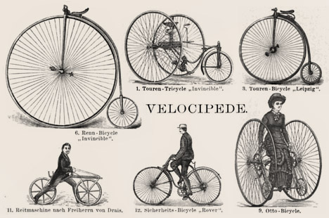

A kerékpár története röviden
Az első kerékpár Karl von Drais báró nevéhez fűződik, aki egy szilárd vázhoz kerekeket rögzített, mivel nagyon sokat kellett járnia az erdőt, és meg akarta gyorsítani a folyamatot. Hamar rájött, hogy finomítani kell ezen a közlekedési eszközön, így az első kereket irányíthatóvá, kormányozhatóvá tette. Négy év tökéletesítés után már új kormányszerkezet és állítható ülésmagassággal rendelkezett, ekkor már (1817) az újságok is foglalkoztak a témával, bár még cinikusan. Viszont utána néhány hónap leforgása alatt futótűzként terjedt el Angliában és Franciaországban.
KERÉKPÁRTÍPUSOK
- Mountain Bike
- Trekking,
- Cross
- City
- BMX